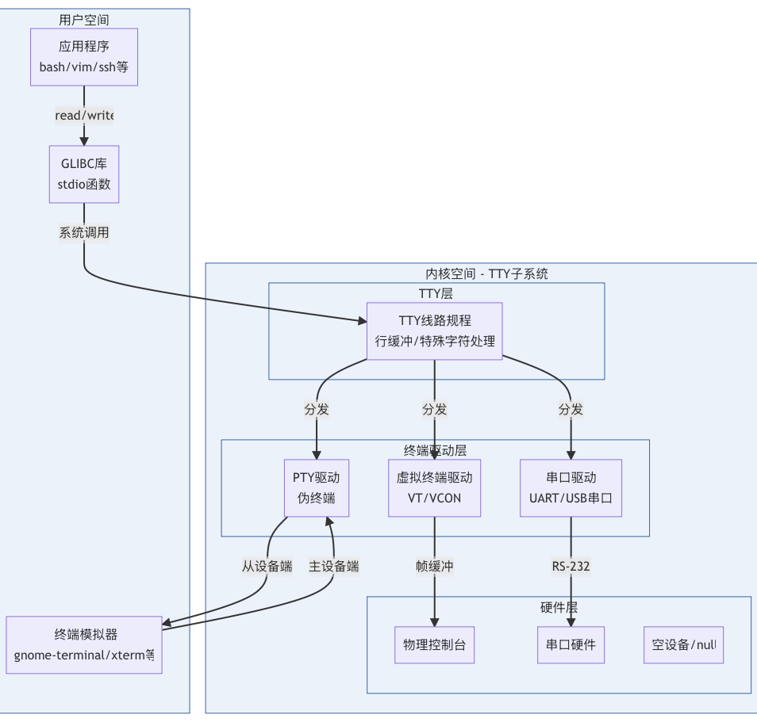
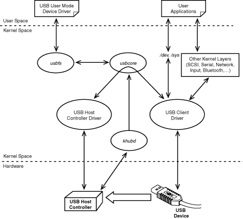
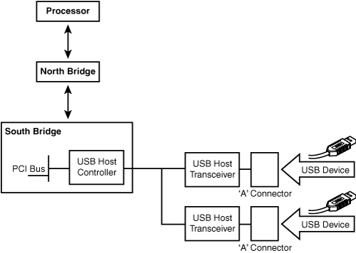

总览架构
┌─────────────────────────────────────────────────────────────┐
│ 1. Python 层（用户态） │
│ ├─ 1.1 ACT 模型 │
│ ├─ 1.2 PySerial / 用户驱动库 │
│ └─ 1.3 CPython API（os.write） │
└───────────────┬──────────────────────────────────────────────┘
│ 调用：PyOS_Write → _Py_write → write()
▼
┌─────────────────────────────────────────────────────────────┐
│ 2. C 库（glibc 层，用户态） │
│ └─ glibc write() → 执行 syscall 指令 │
└───────────────┬──────────────────────────────────────────────┘
│ CPU 切换到内核态
▼
┌─────────────────────────────────────────────────────────────┐
│ 3. Linux 内核（开始） │
│ │
│ 3.1 系统调用入口层 │
│ └─ sys_write → ksys_write │
│ │
│ 3.2 VFS/FS 写入子系统 │
│ └─ vfs_write → new_sync_write → write_iter │
│ │
│ 3.3 TTY 子系统（串口抽象） │
│ ├─ tty_write │
│ ├─ iterate_tty_write │
│ └─ line discipline（n_tty_write） 行规程 │
│ │
│ 3.4 ACM 子系统（USB CDC-ACM 驱动） │
│ ├─ acm_tty_write │
│ ├─ acm_start_wb │
│ └─ usb_submit_urb │
│ │
│ 3.5 USB Core（驱动框架层） │
│ ├─ usb_hcd_submit_urb │
│ └─ 调用 HCD→urb_enqueue() │
│ │
│ 3.6 Host Controller Driver（xHCI/DWC3） │
│ ├─ xhci_urb_enqueue │
│ ├─ xhci_queue_bulk_tx（构造 TRB） │
│ ├─ giveback_first_trb │
│ └─ xhci_ring_ep_doorbell → writel(DB_VALUE, addr) │
│ │
└───────────────┬──────────────────────────────────────────────┘
│ Doorbell 写寄存器 → HCD 硬件开始 DMA
▼
┌─────────────────────────────────────────────────────────────┐
│ 4. USB 控制器（硬件） │
│ ├─ DMA 读取 TRB Ring │
│ ├─ DMA 读取数据缓冲区 transfer_buffer │
│ └─ 发送 USB Bulk OUT 包 │
└───────────────┬──────────────────────────────────────────────┘
▼
┌─────────────────────────────────────────────────────────────┐
│ 5. MCU / 机器人控制器 │
│ ├─ USB Bulk OUT 解包 │
│ ├─ 解析动作命令 │
│ └─ 控制舵机、电机 │
└──────────────────────────────────────────────────────────────┘
1. Python 层（用户态）
1.1 ACT → Feetech飞特舵机库 → PySerial → PyOS(os.write())
action → serial.write(bytes)
1.2 CPython 调用链
| 函数 | 作用 |
|---|---|
_Py_write() |
CPython 封装写接口，处理 EINTR/信号 |
_Py_write_impl() |
真正调用 glibc 的 write() |
2. glibc 层
调用链
glibc write(fd, buf, count)
↓
syscall(SYS_write)
这边如果要看具体系统调用具体要先编译在反汇编，而且X86的ARM还不一样，我还没研究明白。
如果是ARM的话，从EL0到EL1需要切换特权级，就是在这边实现的。所以下面也就进入内核态了。
所以这边的作用是：
- 构造系统调用参数
- 执行 syscall 汇编指令
- 切换到内核态
3. Linux 内核层
3.1 FS系统调用入口
调用链
sys_write() // 系统调用入口
↓
ksys_write() // write() 系统调用的内核实现
ksys_write()作用
- 根据 fd 找到 struct file（文件对象）
- 设置正确的文件偏移（pos/ppos）
- 调用 vfs_write() 完成真正写入
3.2 FS/VFS 写子系统
调用链
vfs_write() // VFS(虚拟文件系统)层的通用写接口
↓
new_sync_write() //同步写入包装层，目的是同步接口，解决write的同步性
↓
file->f_op->write_iter()
vfs_write()作用
- 权限与可写性验证
- 用户空间指针有效性检查
- 文件边界与追加模式处理
- 写事务开始与结束（文件系统可能使用）
- 分发到具体文件系统/设备的 write/write_iter 实现

new_sync_write()作用
同步写入包装层，目的是同步接口，解决write的同步性。
所有常规文件、socket、pipe、设备等写入最终都会走到new_sync_write。
调用文件的 write_iter 回调file->f_op->write_iter()
write_iter 是文件系统 / 驱动在 file_operations 中提供的回调函数指针，在fs.h中定义，各种文件类型自己实现。
| 文件类型 | write_iter 实现在哪里？ |
|---|---|
| 普通文件（ext4） | fs/ext4/file.c → ext4_file_write_iter() |
| XFS 文件系统 | fs/xfs/xfs_file.c → xfs_file_write_iter() |
| Btrfs 文件系统 | fs/btrfs/file.c → btrfs_file_write_iter() |
| 管道 pipe | pipe 走的是 pipe_write()（不使用 write_iter） |
| socket（TCP/UDP） | net/socket.c → sock_write_iter() |
| 字符设备（设备驱动） | 驱动自己实现其 write()，通常不使用 write_iter |
| 终端 tty | drivers/tty/tty_io.c → tty_write() |
3.3 drivers/tty 子系统
在 Linux 或 UNIX 中，TTY（Teletypewriter）是一个抽象设备。有时它指的是一个物理输入设备，例如串口，有时它指的是一个允许用户和系统交互的虚拟 TTY 设备，例如图形终端。
TTY 是 Linux 内核中对“文本交互式设备”的统一抽象层，用于处理输入输出、行编辑、控制字符、信号、会话与终端行为。
在 Linux 中：/dev/ttyS0, /dev/ttyUSB0, /dev/ttyAMA0, /dev/ttyACM0
都属于 TTY（Teletypewriter） 框架下的串口驱动（serial driver）。

这里就是要写到串口硬件
调用链
tty_write() // 啥也没干直接调用file_tty_write
↓
file_tty_write() // 检查 TTY 结构体是否损坏或非法,可写性检查,获取行规程对象,调用iterate_tty_write
↓
iterate_tty_write() // 将 write() 的数据拆成合理块大小，避免 DOS 式长数据写入
// 是对低层驱动的一种保护（降低锁竞争、避免巨量拷贝）
↓
ld->ops->write(tty, file, tty->write_buf, size);
（默认是 n_tty_write）
↓
n_tty_write() //是Line discipline层，n_tty_write在drivers/tty/n_tty.c
作用
- 分块写，提高驱动效率，满足硬件要求，默认 chunk = 2KB（NTTY 所能稳定处理的大小）
- 行规程（Line Discipline，LDISC） 处理（如果开启 OPOST）
- 最终调用低层串口（比如ACM/UART......）驱动的 write
行规程是 Linux TTY 子系统中独有的的一个“协议处理层”，位于用户进程与底层串口驱动之间，用来处理人类交互式终端的输入输出行为。
行规程让 TTY 具备这些传统终端行为，负责解释用户输入、处理终端行为并管理缓冲区。
| 功能 | 描述 |
|---|---|
| 回显 echo | 你输入一个字符，需要回显到屏幕 |
| Ctrl-C 发送 SIGINT | 解释控制字符，不是普通字节 |
| Ctrl-Z 暂停任务 | 解释并发信号 |
| 规范模式（canonical） | 只有按 Enter 才把一行送出 |
| 行编辑功能 | Backspace 删除，Ctrl-U 删除整行 |
| 处理 NL/CR | '\r' / '\n' 的转换规则 |
| 输入缓冲管理 | input buffer, echo buffer 等 |
3.4 ACM 子系统（CDC-ACM 驱动）drivers/usb/class/cdc-acm
CDC-ACM层：
- 构建 TTY 设备：/dev/ttyACM0
- 实现 TTY 的写接口（最核心）
- 自动电源管理 / autosuspend
- 管理 USB Bulk 传输（IN/OUT）
调用链
acm_tty_write() // 实现 TTY 的写接口（最核心）
↓
acm_start_wb() // 提交写 URB 到 USB 栈。这一步会让 USB 控制器（如 xHCI）开始 DMA 传输
↓
usb_submit_urb()
作用
- 分配 acm_wb 缓冲区
- 准备 URB （USB Request Block）,一次 USB 发送动作完全被描述为一份 URB。
- 提交到 USB Core
URB 是 USB Core 能够管理并发和队列的基础
struct urb {
struct usb_device *dev; // 目标 USB 设备
unsigned int pipe; // 管道 + 方向 + 端点号
void *transfer_buffer; // 数据 buffer（Out: 数据要发出去）
dma_addr_t transfer_dma; // DMA 地址
int transfer_buffer_length; // 要发送的字节数
int actual_length; // 实际发送/接收的字节数（由硬件填写）
unsigned int transfer_flags; // 零包？短包？是否使用 DMA 映射？
void (*complete)(struct urb *); // 完成回调函数
};
3.5 USB Core 子系统
调用链
usb_submit_urb()
↓
usb_hcd_submit_urb()
↓
hcd->driver->urb_enqueue(hcd, urb, mem_flags) ← 这里进入具体 HCD（如 xHCI）
unmap_urb_for_dma(hcd, urb)
usb_submit_urb 做的事
- 各种合法性检查（设备/endpoint/flags/packet 长度等）
- 规范化参数（方向、interval、transfer_flags）
- 初始化 urb 状态字段
- 处理 Isochronous 特殊逻辑
- 处理 SG 逻辑
- 调用 usb_hcd_submit_urb（底层）
usb_hcd_submit_urb()作用
- 校验 URB（USB Request Block）,一次 USB 发送动作完全被描述为一份 URB。
- 执行 DMA 映射（map_urb_for_dma）
- 调用 HCD 驱动的 urb_enqueue（如 DWC2/XHCI/EHCI）
3.6 Host Controller Driver（如 xHCI / DWC3）
xHCI（eXtensible Host Controller Interface）是 USB 3.x/USB 2.0/USB 1.1 的统一主机控制器规范，是现代 Linux（包括树莓派、PC）使用的 USB 控制器硬件抽象层。
内核中负责处理 USB 传输（URB → TRB → DMA）的就是 xHCI 驱动
调用链（核心）
linux/drivers/usb/host/xhci.c
xhci_urb_enqueue() // 功能：将一个 URB 放入 xHCI（USB3 控制器）的传输队列。根据端点类型选择不同的 queue_xxx_tx() 函数，并为本次 URB 分配对应的传输描述（TD，多个 TRB）。
//根据端点类型选择 TX 函数
这里正式进入 xHCI 的 TRB 构造逻辑：
Control → xhci_queue_ctrl_tx() 控制传输
Bulk → xhci_queue_bulk_tx() 批量传输，写字符控制肯定是走的这个
Intr → xhci_queue_intr_tx() 中断传输
Isoc → xhci_queue_isoc_tx_prepare() 等时传输
↓
↓ 下面的在 linux/drivers/usb/host/xhci-ring.c
xhci_queue_bulk_tx() //为一个 Bulk URB 构造 xHCI 所需的一系列 NORMAL TRB，把它们排入对应的 Transfer Ring，并在最后交给硬件。这是 USB3 Bulk 传输（比如写串口数据）的核心数据路径。
↓
queue_trb() // queue_trb() 只是“写 DMA 描述符”。
↓
giveback_first_trb() // 也是在xhci_queue_bulk_tx被调用的，在queue_trb结束之后
↓
xhci_ring_ep_doorbell()
↓
writel(DB_VALUE, db_addr) ← 启动硬件 DMA
xhci_queue_bulk_tx 作用
- 找到该 URB 对应的 Transfer Ring，并决定需要多少个 TRB
- 将整个缓冲区切分为若干 TRB 并入队列
- 调用 queue_trb() 把 TRB 写入 ring
TRB（Transfer Request Block）是 xHCI 硬件 DMA 引擎能识别的“硬件级指令单元
ACM 驱动会整合数据或按需要把 chunk 拼接发送。
TRB 是固定大小（16 字节）的 DMA 描述符，是 xHCI 控制器理解的最小单位。
TRB 有严格的64KB 边界限制，一个 TRB 描述的 buffer 不允许跨越 64KB 物理地址边界。
queue_trb 作用
把一个 TRB 硬件指令写入 xHCI 的 DMA Ring，并保证硬件在读取前所有字段已经按正确顺序写好。
写四块cpu_to_le324 × 32-bit，加起来正好16字节，
- 先写 field0/1/2
- 然后 memory barrier
- 最后写 field3
TRB (16 bytes total)
+-----------------------+
| field[0] | 4 bytes | ← buffer addr low
+-----------------------+
| field[1] | 4 bytes | ← buffer addr high
+-----------------------+
| field[2] | 4 bytes | ← length + TD size
+-----------------------+
| field[3] | 4 bytes | ← control bits (TYPE/CYCLE/CHAIN/IOC)
+-----------------------+
giveback_first_trb 作用
- wmb() 保证所有 TRB 字段已经写入内存（DMA 区域）
- 设置 TRB 的 CYCLE bit（C=1 表示 TRB 有效）
- 调用 xhci_ring_ep_doorbell(xhci, slot_id, ep_index, stream_id)
xhci_ring_ep_doorbell 作用
先写完TRB ring，再写 doorbell 寄存器，触发 xHCI 控制器开始读取 TRB ring。
- 真正写 doorbell MMIO 寄存器，触发 xHCI 控制器开始读取 TRB ring。
- 加入读写屏障，确保在非一致性系统上（例如 RPi 4/5 的 PCIe）DMA 和寄存器写入顺序正确。
trace_xhci_ring_ep_doorbell(slot_id, DB_VALUE(ep_index, stream_id));
readl(db_addr);
writel(DB_VALUE(ep_index, stream_id), db_addr); // 这是 write() 写串口数据时，USB3 控制器真正的Start DMA Transfer，向内存映射的寄存器写一个 32-bit 值
readl(db_addr); // 再读一次确保写入完成（flush）
writel() 写 doorbell 寄存器，触发 xHCI 控制器开始读取 TRB ring。
后面CPU执行一道写指令，硬件控制器自动完成，写完之后在回到CPU，CPU再执行下一条指令，这样CPU和硬件控制器就同步了。
4. USB 控制器（硬件：DWC3/xHCI）
行为
- DMA 读取 TRB
- DMA 获取数据缓冲区
- 发送 USB 包
- 产生 Event TRB 返回给 CPU

USB Client Driver（USB 设备类驱动），也称 USB Function Driver，即和设备功能相关的驱动。包括：
| 设备 | Linux 驱动 |
|---|---|
| USB CDC-ACM 串口 | cdc_acm.ko |
| USB 储存 | usb-storage |
| USB 摄像头 | uvcvideo |
| 蓝牙 dongle | btusb |
| 键盘鼠标 | usbhid |
USB Host Controller Driver（HCD），是软件对硬件的封装，对应不同控制器：
| 控制器 | 驱动 |
|---|---|
| EHCI | ehci-hcd |
| OHCI | ohci-hcd |
| xHCI | xhci-hcd |
| DWC2 | dwc2 |
| DWC3 | dwc3 |
khubd（USB Hub 管理线程）内核线程，用于：
hotplug 事件
USB 插拔检测
重置端口
枚举设备
分配地址

CPU-> 北桥->南桥（PCI/USB Host Controller）-> USB 设备
5. MCU 设备侧
行为
- USB Bulk OUT 解包
- 解析舵机数据协议
- 执行动作